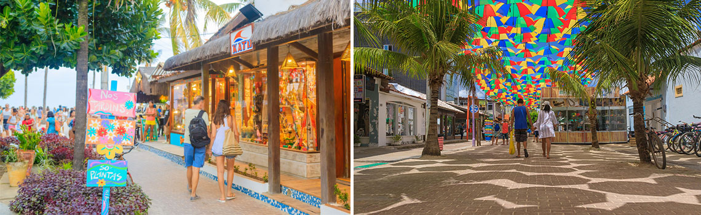
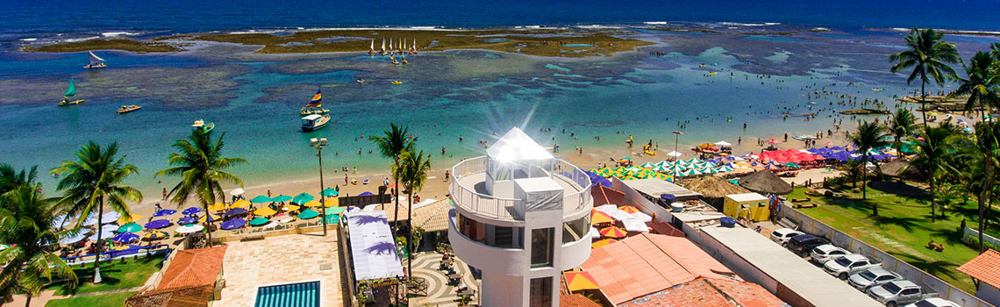
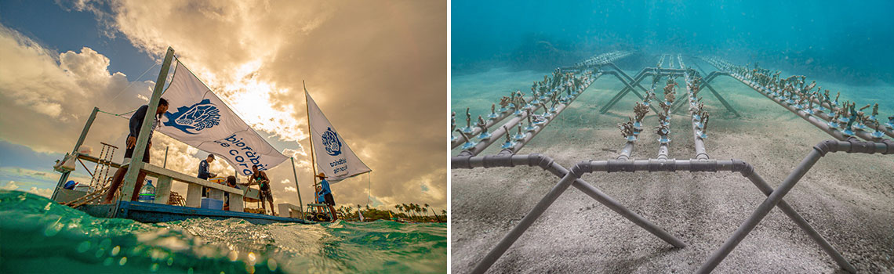
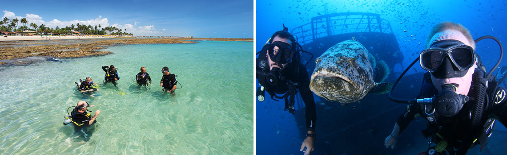

En este video te mostramos algunas de las mejores actividades que puedes hacer en Porto de Galinhas:
Paseo de Buggy de punta a punta, paseo en balsa en las Piscinas Naturales, paseo en balsa en Pontal de Maracaipe, etc.
Paseo en el pueblo de Porto de Galinhas

Visita al Faro de Porto de Galinhas

Biofactorías de coral

Inmersiones y Naufragios
